This is the home screen of AutoCAD 2025. It provides options to open an existing drawing or start a new one. The recent files section displays previously accessed projects.
2. AutoCAD Drawing Interface
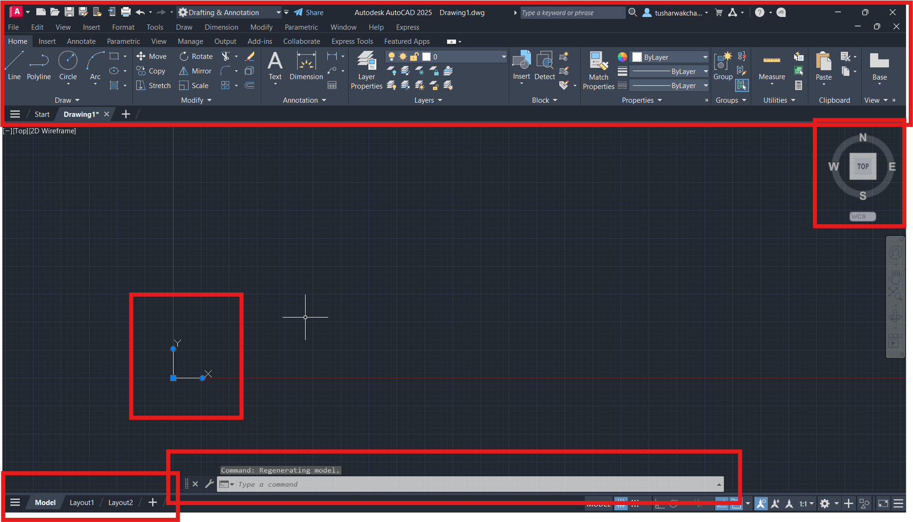
Once a new drawing is opened, this interface appears. It includes the command bar, navigation cube, toolbars, and workspace grid to begin drafting.
3. Example of a 2D Drawing
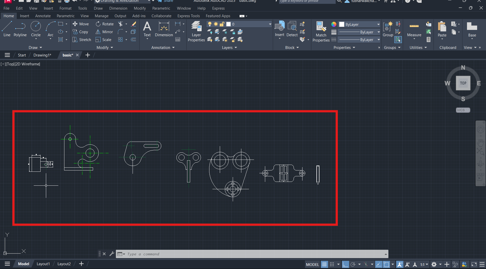
This screenshot shows a technical drawing in progress, consisting of multiple mechanical components designed using various drawing tools.
4. Layout View for Printing
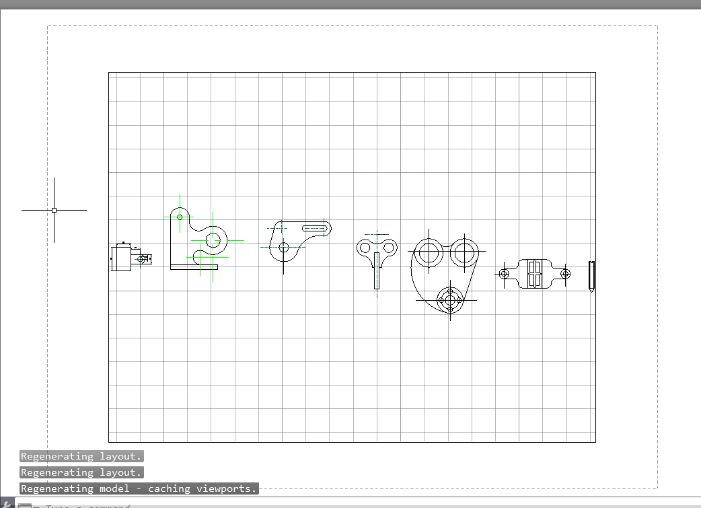
The layout view is used for printing or sharing the drawing. It helps in setting up viewports and arranging elements on a sheet.
Tinkercad Pages Explanation
1. Tinkercad Dashboard
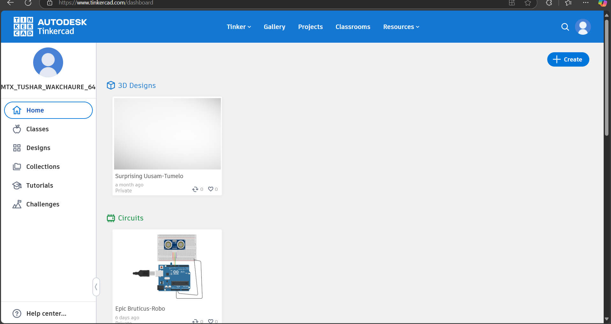
The dashboard provides an overview of your designs and circuits. It allows you to create new projects and access saved ones.
2. Editing a Circuit
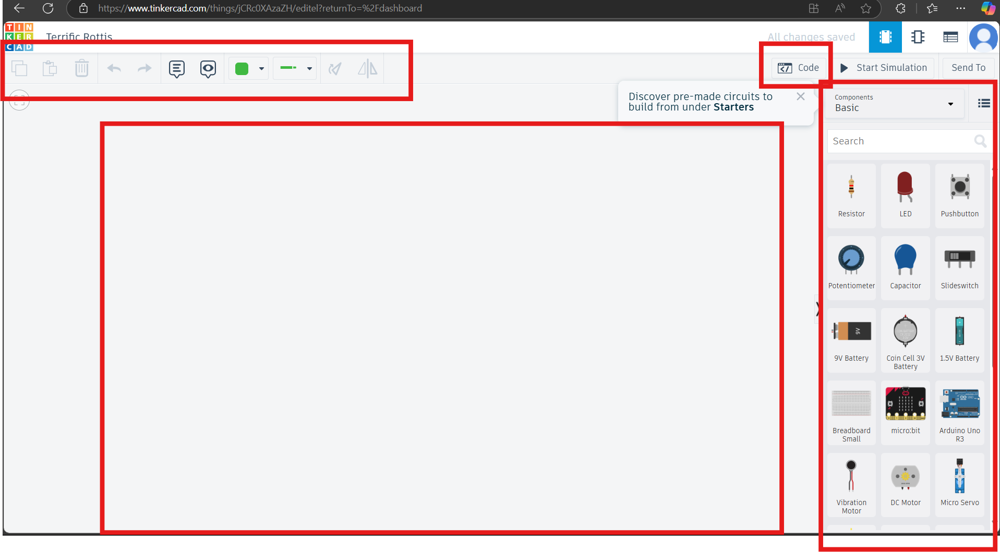
Here, the user is editing a circuit, with components like resistors, motors, and LEDs available for selection.
3. Create Circuit
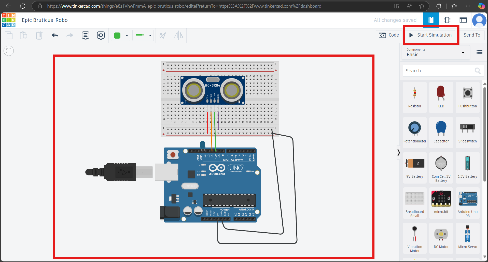
This is a Tinkercad screenshot showing an Arduino Uno circuit with an HC-SR04 ultrasonic distance sensor connected for a project called "Epic Bruticus Robo". The highlighted red box indicates the active components and wiring in the circuit design.
4. Logical Conditions
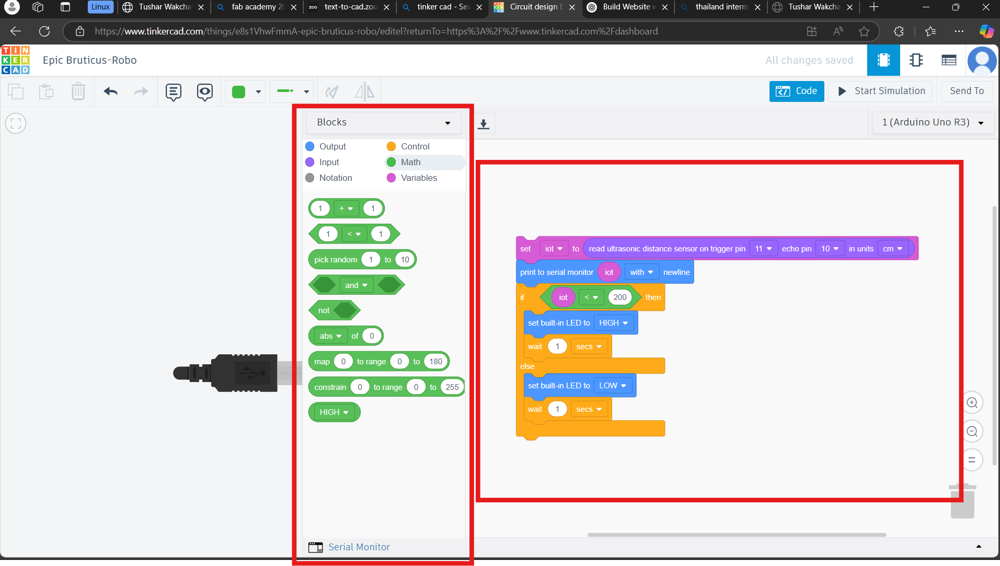
This section of the block code shows the condition where if the measured distance is less than 200 cm, the built-in LED turns on; otherwise, it stays off.
3. Circuit Simulation
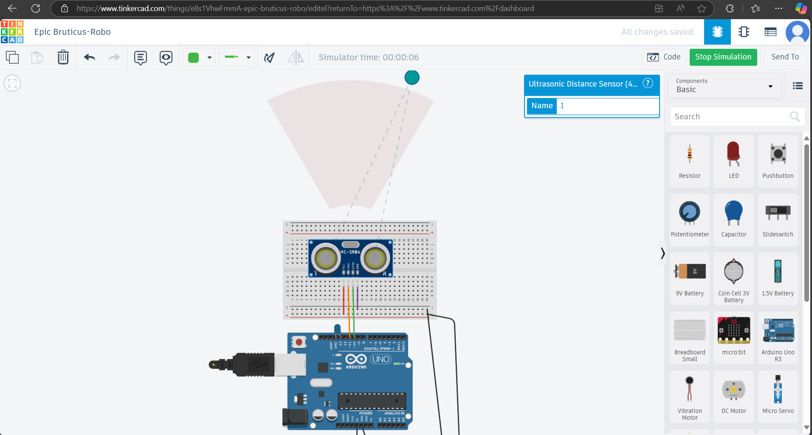
This page shows a circuit simulation in Tinkercad, featuring an Arduino board connected to an ultrasonic sensor.
5. Final Circuit Overview
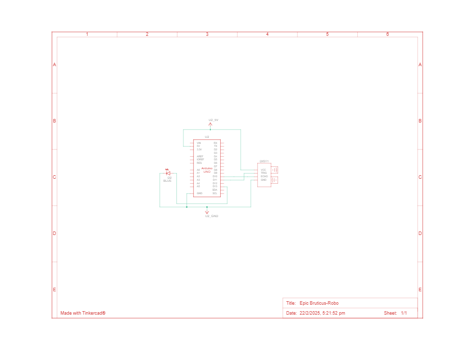
A complete view of the ultrasonic sensor project setup in TinkerCAD, including wiring and coding logic.
Understanding the Text-to-CAD Software Workflow
1. Accessing the Platform
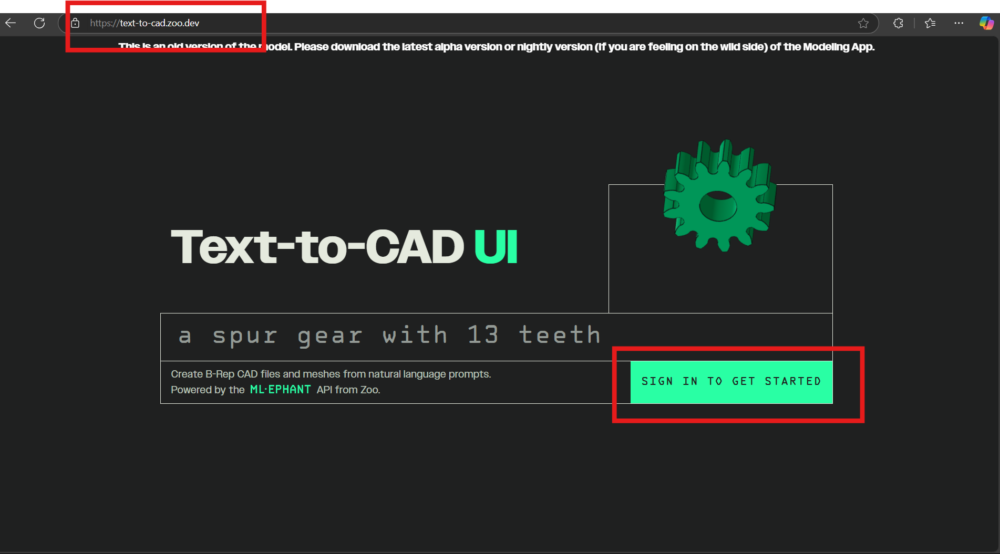
The first step involves accessing the Text-to-CAD UI through the provided URL. Users must sign in to get started. This platform converts text prompts into 3D CAD models.
Example Prompt: "A spur gear with 13 teeth."
2. Inputting Specifications
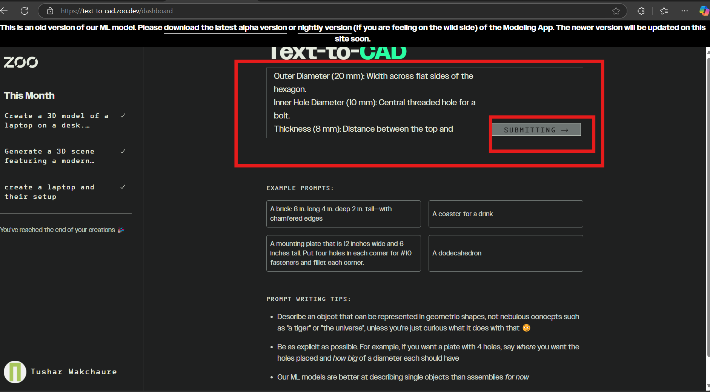
After logging in, users can enter specific dimensions and parameters. For instance, you can define:
Outer Diameter: 20 mm (distance across flat sides of the hexagon)
Inner Hole Diameter: 10 mm (for the central threaded hole)
Thickness: 8 mm (distance between top and bottom faces)
Once entered, click Submit to process the prompt.
3. Generated 3D Model Preview
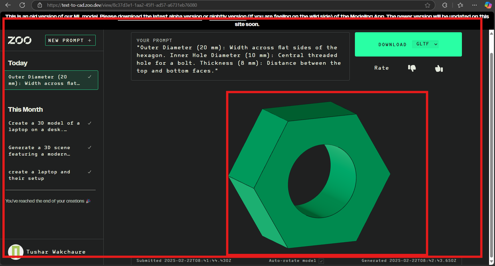
The software generates a 3D model based on the given specifications. You can preview the model, rotate it, and download it in formats like GLTF.
4. Importing into SOLIDWORKS
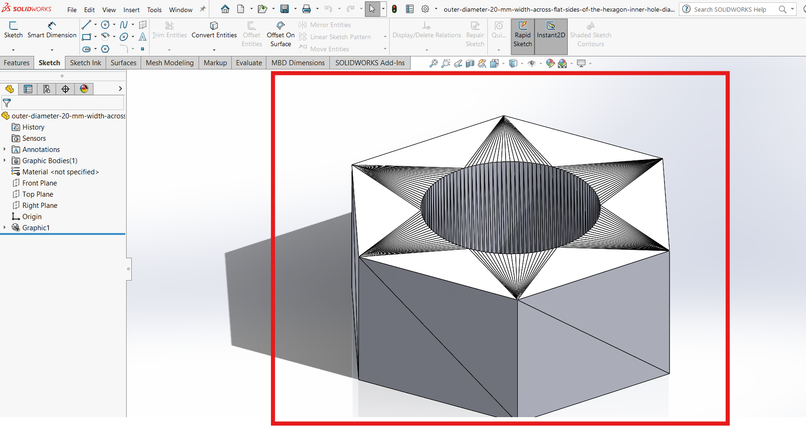
Download the generated file and import it into SOLIDWORKS. The model may display mesh lines due to tessellation but can be refined using SOLIDWORKS tools.
SOLIDWORKS Interface Overview
1. Welcome Screen
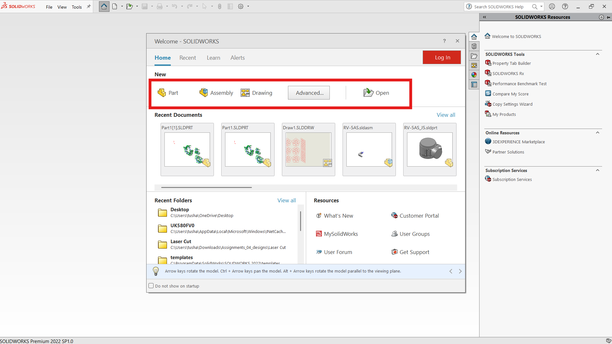
The SOLIDWORKS Welcome Screen provides quick access to start a new design or open existing files. Key options include:
Part: Create individual components.
Assembly: Combine multiple parts into an assembly.
Drawing: Generate 2D drawings of parts or assemblies.
Advanced: Access specialized templates and settings.
Open: Open previously saved projects.
2. Sketch Interface
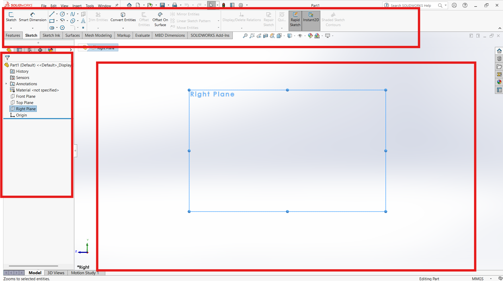
The Sketch Interface allows you to create 2D profiles for 3D models. Important areas include:
Feature Manager Tree (Left Panel): Displays model features and history.
Command Manager (Top Toolbar): Provides tools for sketching, dimensions, and features.
Graphics Area (Center): Workspace for creating and editing sketches.
3. 3D Model View
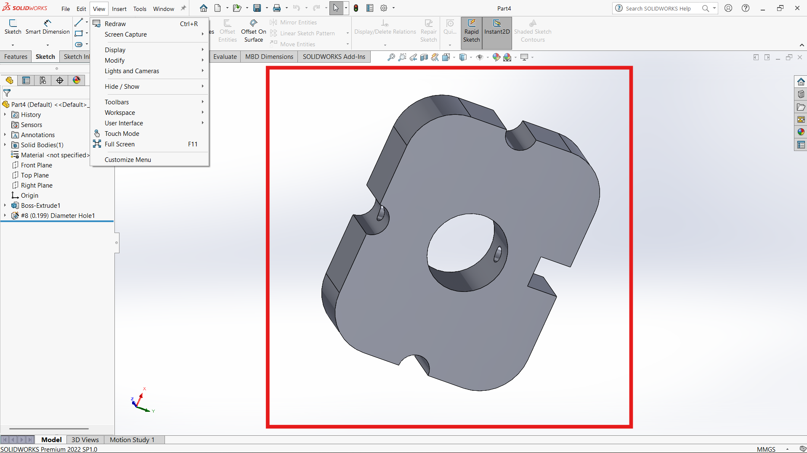
After creating a sketch, you can extrude it into a 3D model. The 3D Model View includes:
Model Tree: Shows all features and components of the part.
Graphics Area: Visualizes the 3D model with rotation and zoom options.
View Menu: Offers options for different viewing angles and display modes.
Steps to Perform Basic to Advanced Tasks in Creo Software
Step 1: Launch Creo and Set Up Workspace
Open Creo software and create a new project. Set the working directory to organize files efficiently.
Step 2: Create a Basic Part Model
Go to File > New > Part. Choose the desired template, name your part, and start sketching basic shapes.
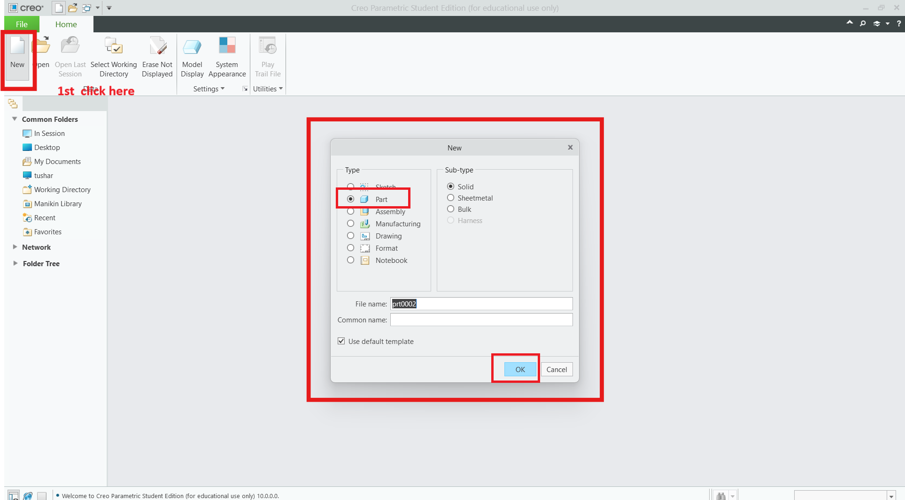
Step 3: Perform Extrude and Revolve Operations
Use the Extrude and Revolve tools to convert sketches into 3D models.
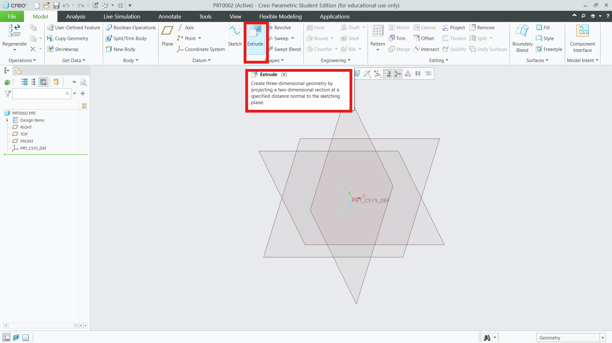
Creo Parametric Interface Overview
1. Top Toolbar (Ribbon Menu)
Contains different tabs like File, Model, Analysis, Live Simulation, Annotate, Tools, View, etc.
Each tab provides access to specific tools and commands related to modeling, simulation, and analysis.
2. Model Tab (Active)
You are currently on the Model tab, which provides tools for creating and editing 3D models.
Features like Extrude, Revolve, Sweep, Chamfer, Round, Hole, and Shell are available here.
3. Highlighted Tool: Extrude
Extrude Tool: Used to create a 3D shape from a 2D sketch by projecting it perpendicular to the sketching plane.
The tooltip explains that it allows the creation of three-dimensional geometry at a specified distance.
This is a fundamental feature for basic part modeling.
4. Graphics Area (Main Workspace)
This is the main modeling area where the geometry is created and viewed.
You can see a sketched star shape on the sketch plane ready for extrusion.
The coordinate system (X, Y, Z axes) helps you understand the model’s orientation.
5. Model Tree (Left Panel)
Shows the hierarchy of features and components in the current part.
Lists items like RIGHT, TOP, FRONT planes, and coordinate system (PRT_CSYS_DEF) for reference.
Allows you to easily manage features and sketches.
6. Quick Access Toolbar (Top Left)
Provides options for common actions like saving, opening, and regenerating models.
The Regenerate button updates the model after modifications.
7. Bottom Toolbar (Right Side)
Shows the view mode options (e.g., shaded, wireframe, hidden line view).
Helps in visualizing the model in different ways for clarity.
Step 4: Apply Advanced Features
Add features like Chamfer, Fillet, Shell, and Hole to enhance the model.
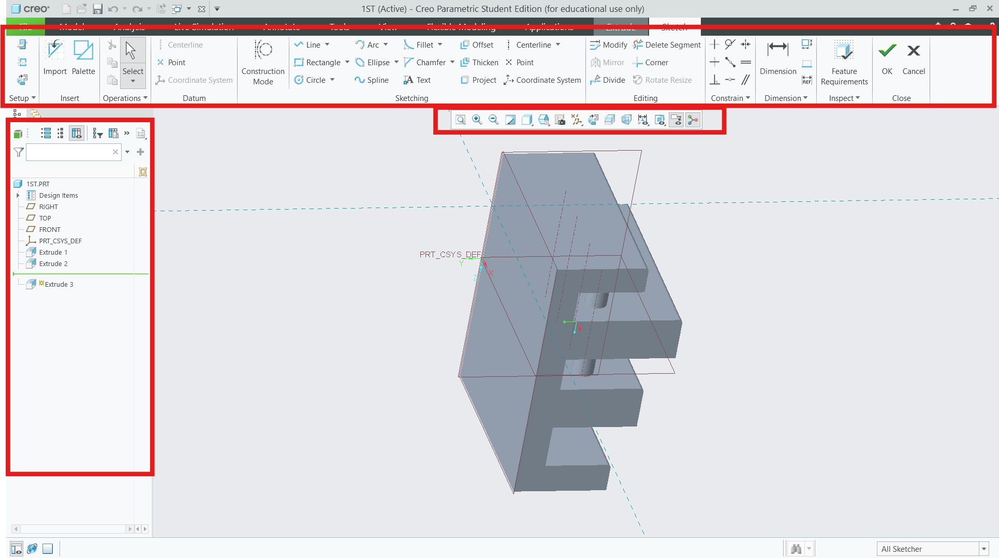
Creo Parametric Interface Explanation
1. Top Toolbar (Ribbon Menu) - Red Box at the Top
This toolbar provides various tabs and tools for modeling, sketching, and editing: